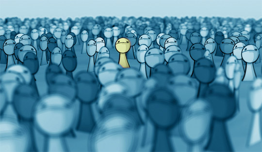

A
A sense of self develops in young children by degrees. The process can usefully be thought of in terms of the gradual emergence of two somewhat separate features: the self as a subject, and the self as an object. William James introduced the distinction in 1892, and contemporaries of his, such as Charles Cooley, added to the developing debate. Ever since then psychologists have continued building on the theory.
B
According to James, a child's first step on the road to self-understanding can be seen as the recognition that he or she exists. This is an aspect of the self that he labelled 'self-as-subject', and he gave it various elements. These included an awareness of one's own agency (i.e. one's power to act), and an awareness of one's distinctiveness from other people. These features gradually emerge as infants explore their world and interact with caregivers. Cooley (1902) suggested that a sense of the self-as-subject was primarily concerned with being able to exercise power. He proposed that the earliest examples of this are an infant's attempts to control physical objects, such as toys or his or her own limbs. This is followed by attempts to affect the behaviour of other people. For example, infants learn that when they cry or smile someone responds to them.
C
Another powerful source of information for infants about the effects they can have on the world around them is provided when others mimic them. Many parents spend a lot of time, particularly in the early months, copying their infant's vocalizations and expressions. In addition, young children enjoy looking in mirrors, where the movements they can see are dependent upon their own movements.
This is not to say that infants recognize the reflection as their own image (a later development). However, Lewis and Brooks-Gunn (1979) suggest that infants' developing understanding that the movements they see in the mirror are contingent on their own, leads to a growing awareness that they are distinct from other people. This is because they, and only they, can change the reflection in the mirror.
D
This understanding that children gain of themselves as active agents continues to develop in their attempts to co-operate with others in play. Dunn (1988) points out that it is in such day-to-day relationships and interactions that the child's understanding of his- or herself emerges. Empirical investigations of the self-as-subject in young children are, however, rather scarce because of difficulties of communication: even if young infants can reflect on their experience, they certainly cannot express this aspect of the self directly.
E
Once children have acquired a certain level of self-awareness, they begin to place themselves in a whole series of categories, which together play such an important part in defining them uniquely as 'themselves'. This second step in the development of a full sense of self is what James called the 'self-as-object'. This has been seen by many to be the aspect of the self which is most influenced by social elements, since it is made up of social roles (such as student, brother, colleague) and characteristics which derive their meaning from comparison or interaction with other people (such as trustworthiness, shyness, sporting ability).
F
Cooley and other researchers suggested a close connection between a person's own understanding of their identity and other people's understanding of it. Cooley believed that people build up their sense of identity from the reactions of others to them, and from the view they believe others have of them. He called the self-as-object the 'looking-glass self', since people come to see themselves as they are reflected in others. Mead (1934) went even further, and saw the self and the social world as inextricably bound together: 'The self is essentially a social structure, and it arises in social experience ... it is impossible to conceive of a self arising outside of social experience.'
G
Lewis and Brooks-Gunn argued that an important developmental milestone is reached when children become able to recognize themselves visually without the support of seeing contingent movement. This recognition occurs around their second birthday. In one experiment, Lewis and Brooks-Gunn (1979) dabbed some red powder on the noses of children who were playing in front of a mirror, and then observed how often they touched their noses. The psychologists reasoned that if the children knew what they usually looked like, they would be surprised by the unusual red mark and would start touching it. On the other hand, they found that children of 15 to 18 months are generally not able to recognize themselves unless other cues such as movement are present.
H
Finally, perhaps the most graphic expressions of self-awareness in general can be seen in the displays of rage which are most common from 18 months to 3 years of age. In a longitudinal study of groups of three or four children, Bronson (1975) found that the intensity of the frustration and anger in their disagreements increased sharply between the ages of 1 and 2 years. Often, the children's disagreements involved a struggle over a toy that none of them had played with before or after the tug-of-war: the children seemed to be disputing ownership rather than wanting to play with it. Although it may be less marked in other societies, the link between the sense of 'self' and of 'ownership' is a notable feature of childhood in Western societies.